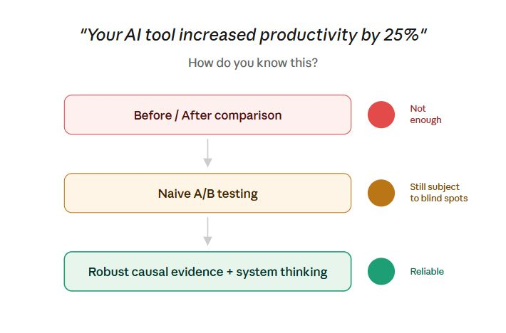

"Our AI tool increased productivity by 25%." I have heard it many times, almost always from executives who are convinced they already measure the impact of AI reliably. When I ask how they know, the answer is usually the same: a before/after comparison.
Most of you probably know that this is not sufficient. What is said less often is that a naive A/B test is not sufficient either.

The before and after periods do not differ only in the tool. Many other things change at the same time.
The most obvious reason is seasonality. You deploy the tool in September and compare it with August: any difference could simply be the natural rhythm of the business, or something that happened outside the company. It is like fitting new tyres on an aircraft in winter and blaming them for higher fuel burn: maybe, or maybe it is the cold.
Let us say you do it properly. You run a clean randomised experiment (an A/B test, or other causal AI methods to measure the effect) and you get a causal estimate. Can you open the champagne?
Not so fast. Based on many things I have witnessed in my work, a good causal estimate can still be misleading, or misinterpreted. These are the three problems I have run into most.
If productivity gains come from motivation and excitement about a new tool rather than from the tool itself, that "impact" may be short-lived and will not replicate with other tools. That is why understanding the mechanism, the pathway that explains the effect, matters as much as identifying the cause.
I see teams track response time or task completion and then extrapolate to business growth. That is often a heroic leap. A positive effect on an easily accessible metric can hide a negative effect on more important, longer-term metrics.
An example: generating tons of online content with AI increases impressions and followers, but can harm brand loyalty and perception and, eventually, long-term growth.
The average effect can look fantastic while specific teams, clients or contexts saw zero benefit. This is where heterogeneous treatment effects come in, arguably the hottest topic in causal AI today.
How the effect changes over time matters too. Something that works in the first week is not guaranteed to work the same way a month from now, especially with generative AI: for instance, when people start to over-rely on the tool and stop checking its output carefully.
Measuring the impact of AI is not just a statistics problem. It is a systems problem: you need robust causal evidence, but also an understanding of why it works, for whom, on which metrics and for how long.
Before accepting the next "+25%", I would ask four questions:
A question for you: which of the AI impact figures going around your company would survive these four questions?